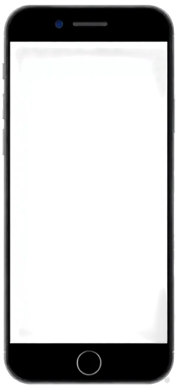
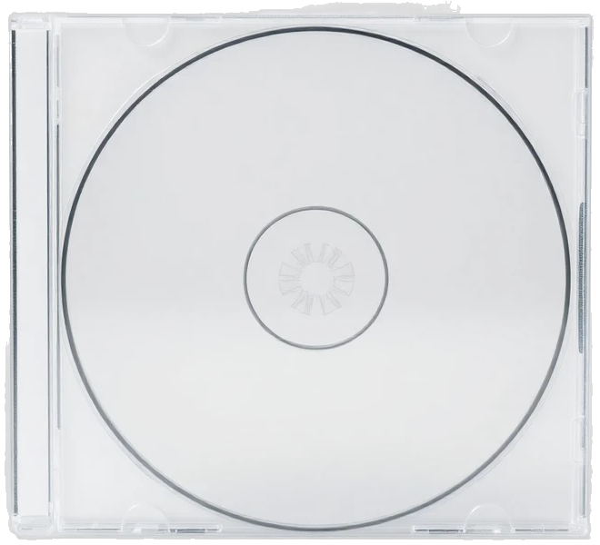
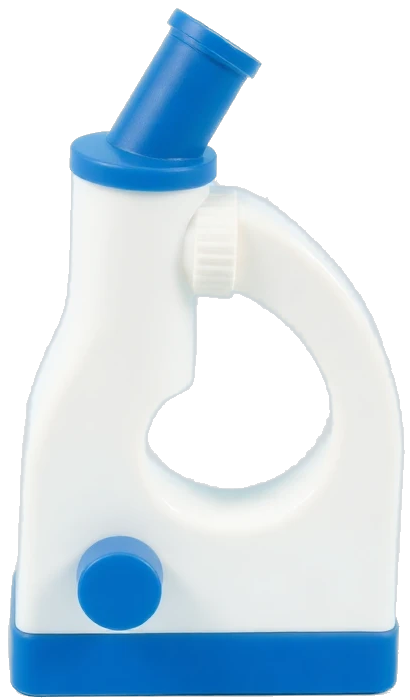
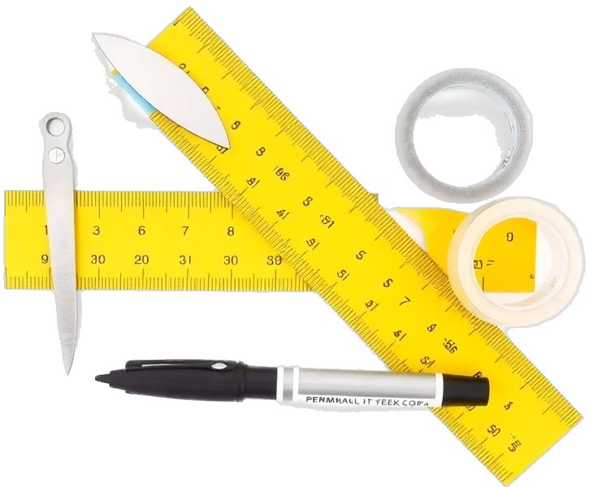
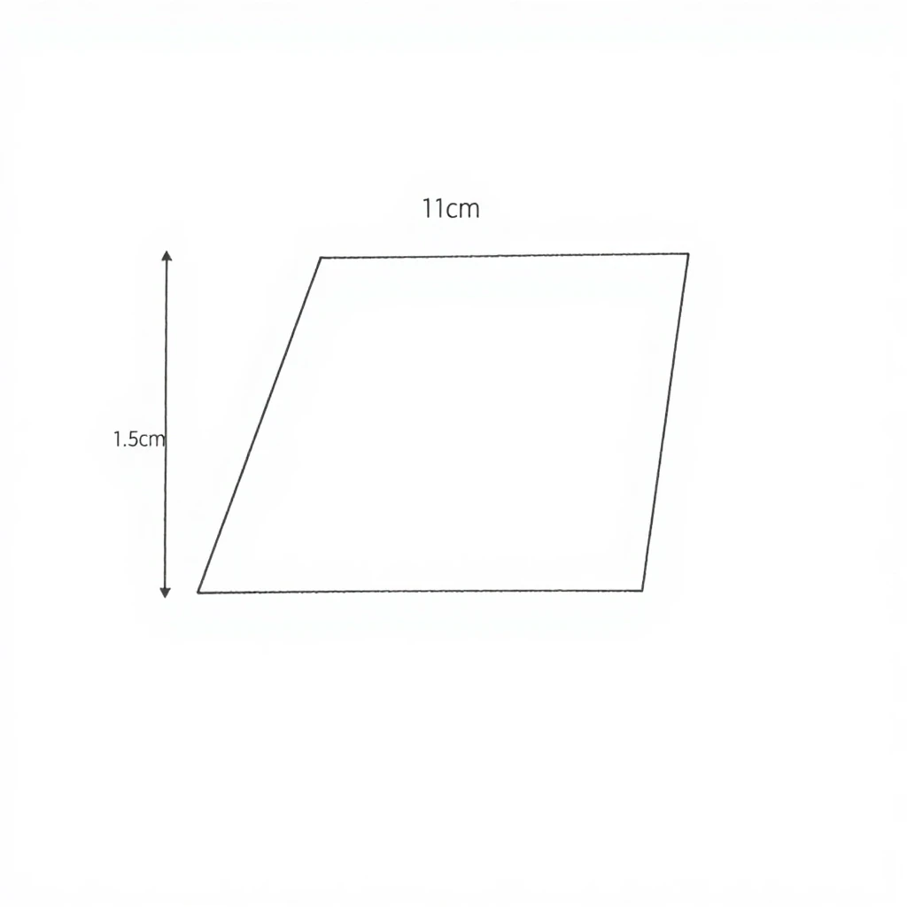
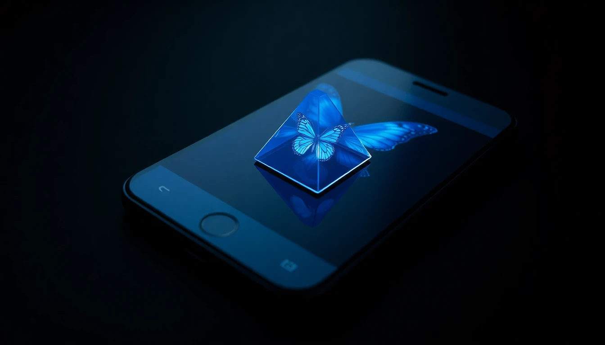

Turn your smartphone into a 3D illusion machine!
We're going to create a simple device that produces a "hologram" effect. While it's not a true laser hologram, it's a brilliant optical illusion called a Pepper's Ghost. It uses a specially formatted video on your phone and a transparent pyramid to create a floating 3D-like image.


(An old CD case is perfect! Thin, rigid plastic sheets also work.)

(You asked about this! While not essential for the build, you can use it to inspect the plastic for scratches that might blur your hologram.)

(Scissors or a craft knife, a ruler, a pen, and some clear tape.)
On a piece of paper, draw a trapezoid shape with the dimensions shown below. This will be one of the four sides of our pyramid.

Carefully trace your paper template onto the clear plastic four times. A fine-tipped permanent marker works well. Then, using a craft knife or sturdy scissors, cut out the four plastic shapes. Adult supervision is recommended for this part!
Take your four plastic trapezoids and tape them together along the slanted edges to form a pyramid. A small piece of clear tape on the outside seams works best. Your pyramid should look like this when placed on your phone.

You're ready! Place your pyramid upside-down on the center of the display below. For the best effect, turn down the lights in your room. Press the play button and watch the magic happen!
The "hologram" is based on a 19th-century illusion technique called Pepper's Ghost. The video on your screen displays the same object from four different angles. Each image reflects off one of the four faces of your pyramid. When you look at the pyramid from the side, your brain combines these four reflections into a single, complete image that appears to be floating in 3D space inside the pyramid. It's a simple but incredibly effective illusion!